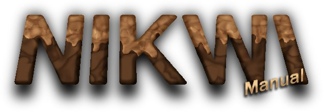

|  Gameplay
You play as a 9
year old boy in
a game about his absolute dream: a world made of candies! Your role is to guide
Nikwi through all the 30 levels, eat all the candies in each level and
avoid the monsters and the hazards that each level has. Nikwi has a
talent on jumping high - although his falls are not as good as he would
like - and this is his only armor
against the monsters which try to turn his dream into a nightmare.
Every six levels, the theme changes (with five total themes) and the gameplay is altered a bit. Every two levels or so, new monsters appear - monsters which require different approaches to be taken in order to avoid them. System requirements
Nikwi requires
at least a Pentium 3 or later
CPU to work (it may work with
older CPUs, but the use of older CPUs than Pentium 3 is not recommended
and definitelly not supported) running at least at 600MHz. It also requires a graphics
card that can support 640x480 with
16bits of color (most cards that are available for Pentium 3
support this mode). Lastly, it requires at least 32MB of system RAM memory.
For smooth gameplay, a CPU running at 2GHz and a video card with 2D acceleration and 16MB of video ram is recommended. In order to take advantage of the 2D acceleration, Nikwi must be run in fullscreen mode. Nikwi requires Windows 2000, Windows XP or newer or Linux with kernel 2.6 or newer. It may work on other operating systems, but we cannot provide support for them. For Linux users: Nikwi requires the latest version of SDL (has been tested and compiled with SDL 1.2.9). Most Linux distributions include SDL, but if yours doesn't -or if the version included is very old - visit http://www.libsdl.org/ to obtain it. Note: the game may or may not run in order and weaker systems than those mentioned above. In any case, the use in such systems is discouraged and not supported. We will not be able to Game screens
The game
contains two main screens, the menu
and the game:
Controls
You control
Nikwi using the keyboard. The keys are presented in the table below:
Troubleshooting / F.A.Q.
Windows
Q: The installer says a message like "Drive or path not found" (or similar). A: Please be sure that you run the installer from a drive where you have full priviledges. Drive C: is the ideal place to run the installer from. Q: I have installed the game, but no icons were made in my desktop or the Start menu. A: Something went wrong during the installation. Try to reinstall the game. Q: Where is the game installed? A: The game installs itself at C:\Slashstone\Games\Nikwi.Q: Can i move the game to a different location? A: Yes, but the desktop and Start menu shortcuts will not work and if you want to remove it from your system, you will have to manually delete the shortcuts and the game files. Q: When the game starts, it says that the SDL.DLL is not available and exits. A: Your installation is corrupted. Try to reinstall the game. Q: The game is slow! A: Check if your system meets the minimum system requirements. If it does, try to update your video card drivers. If you run the game in a window, try to run it in fullscreen to take advantage of hardware acceleration. Linux Q: The binary says that a .so file is missing. A: Check if your system is missing any shared library and if it includes SDL. Try to use the ldd command to see which shared objects the binary wants and try to locate them. Q: The game is slow! A: Check your video card drivers. Running the game in fullscreen may solve the problem, but SDL doesn't seem to take advantage of hardware acceleration under Linux. Contact
|